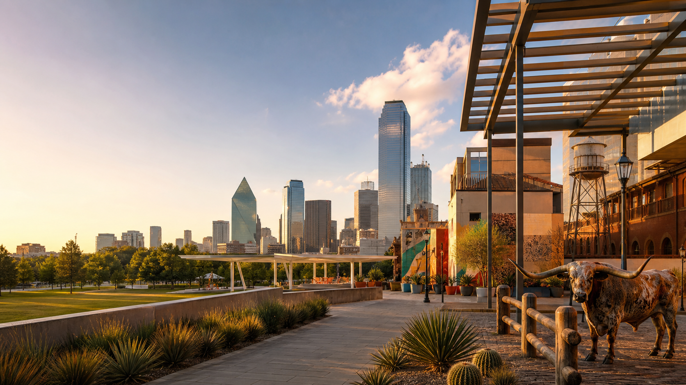

Hotel Swexan
Harwood/Uptown, lively, design-forward, and listed by Michelin as a One Key stay.
Friday night to Monday
Base yourself in Uptown or Harwood, keep Friday and Saturday for actual nightlife, use Michelin for the meal anchors, and make Fort Worth the day-trip centerpiece.

For this trip, the best neighborhood is the one that minimizes dead time: close to Katy Trail, Klyde Warren Park, the Arts District, rooftops, cocktail bars, and short rides to Deep Ellum or Bishop Arts.
Harwood/Uptown, lively, design-forward, and listed by Michelin as a One Key stay.
Better if you want Midnight Rambler downstairs and a clean Arts District / Dealey Plaza morning.
Cooler hotel scene, weaker walking base. Book it only if the pool/design trade-off is worth rideshares.
Do not book a serious dinner for a 10pm arrival. Get to the hotel, change fast, then choose Happiest Hour, Waterproof, or Midnight Rambler for the first drink.
Start slow, go west by late morning, use the Cultural District and Stockyards as the spine, then either stay for honky-tonk or return for Dallas clubs.
Bishop Arts for brunch and shops, then the M-Line trolley, Klyde Warren, Arts District, or White Rock / Arboretum if you want outdoor air without committing to a hike.
Keep Monday graceful. Arboretum if you want pretty, Dealey Plaza outside if you want history, then lunch near the hotel and airport.
Katy Trail, McKinney Avenue Trolley, Klyde Warren Park, Bishop Arts, Deep Ellum, White Rock Lake, and the Dallas Arboretum.
Cedar Hill State Park, Cedar Ridge Preserve, and Boulder Park. They are good regional options, but wrong for a nightlife-heavy first Dallas weekend.
The good Dallas weekend is urban: walks, rooftops, galleries, restaurants, and one big Fort Worth detour. No need to spend the best hours driving to trails.
Big rooftop, DJs Friday/Saturday, easy for arrival night.
19th-floor Statler pool deck with bottle-service energy after dark.
Subterranean cocktail room before a louder night.
The credible electronic/dance-club pick; buy tickets if the DJ matters.
Alternative late-night club with rooftop patio energy.
Country dance hall if you want Dallas boots without waiting for Fort Worth.
Guide du Routard is right to separate Fort Worth from Dallas. The Stockyards, Cultural District, Sundance Square, and rodeo/honky-tonk culture make it feel like a real second city, not a suburb.
TRE is useful Monday to Saturday, but late returns can be limiting. If you stay for Billy Bob's, budget for a late rideshare back.
Deep Ellum sushi counter. Reservation-hard, best if you skip the Fort Worth night.
Dallas Michelin-star splurge dinner. Better for Saturday/Sunday than Friday arrival.
Knox-Henderson dinner before a cleaner Saturday Dallas night.
Bishop Arts brunch/lunch, strongest fit for Sunday.